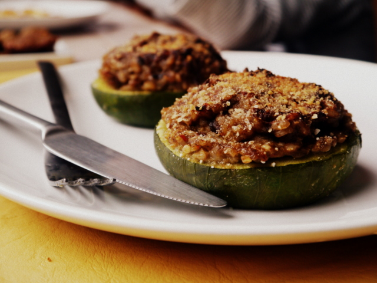

Aunque no estés listx para dejar las carnes, éstas recetas te van a encantar!
Ser vegetariano puede ser todo un reto en el día a día: desde que vas al súper hasta el momento en que vas a cocinar. Y como lo sabemos muy bien, preparamos para ti estas recetas vegetarianas que van a enamorar tu paladar. Toma nota de cada una e inclúyelas en tu recetario. Verás que a partir de ahora comerás sin tantas complicaciones, de forma deliciosa y, lo mejor, de forma saludable y muy completa.

Berenjenas rellenas.

Ensalada de verduras la plancha.

Espárragos gratinados.

Tarta de espinaca y hongos secos.

Zapallitos rellenos.

Berenjenas a la plancha.